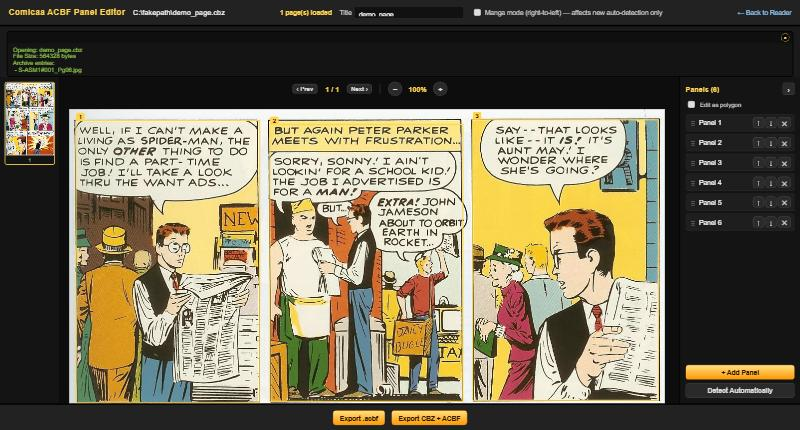
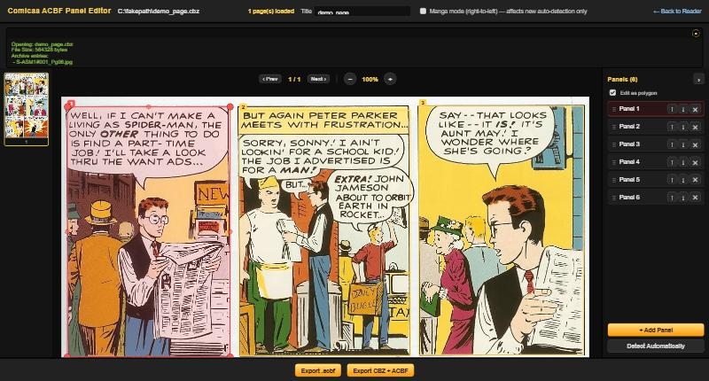
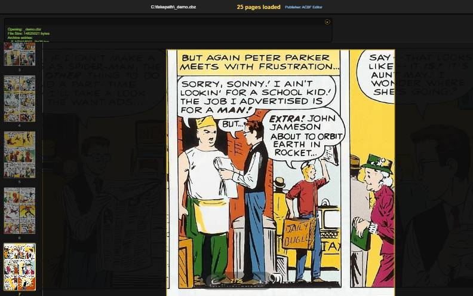

Live demo — for comic publishers
Turning a comic archive into a panel-by-panel reading experience — without redrawing a single page.
The idea
You already have the panels.
Now the reader can find them.
Why readers care
Small screens, full pages
Shrink a print-lettered page to a phone and the dialogue goes illegible before the art does.
Guided, not zoomed
Guided View pans and zooms to every panel automatically, in reading order — no pinching, no hunting for the next line.
Runs on their device
No upload, no server round-trip. The reader's copy of the issue never leaves their phone.
Step 1 of 3
Open the .cbz or .cbr you already have — nothing to re-export first.

Step 2 of 3
Every panel is a shape, not just a box.

Step 3 of 3
Export, and the reader gets an automatic path through the page.

The fine print — read it anyway
For your archive, specifically
Next
Bring one file to the call. We'll run it through the editor live and export it straight back into the reader — start to finish, while you watch.
— add your contact details here before sending —